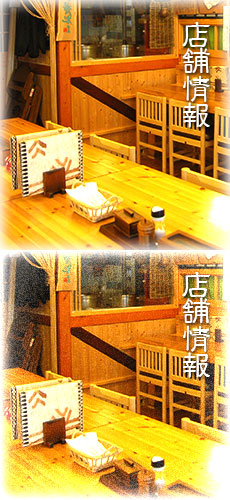

そば処 生粉紡
北海道札幌市東区北35条東16丁目1－29
電話：011-781-6598
営業時間 11:00-14:00・17:00-20:00
定休日 ≪毎週 水曜日、木曜日≫
但し貸切営業日となる場合が有ります）
※年末年始・お盆は変則休とさせて頂きます
お客さまへ
※全席「禁煙」をお願いしています。ご協力下さい。
※ご注文により、配膳に時間差が生じる場合があります。ご了承下さい。
※営業時間外での会合・打ち合わせなど、ご相談下さい。
※貸切り日となる場合があります。ご確認下さい。（事前表示）
※当店は、道産ソバの石臼碾き（丸抜き）のみを手打ちにしています。
（産地はその時々で変わります。）
※生粉打ちを指導しています。（詳細はお尋ね下さい。）